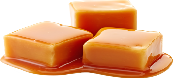

Bu karamel, şeker, glikoz, krema ve tereyağının tek tencerede birlikte 120 °C’ye kadar pişirilmesiyle yapılır. Malzemelerin baştan birlikte pişmesi süt karameli aromasını (Maillard) oluşturur ve 170 °C’lik kuru şeker karamelizasyonundaki yanık ve sıçrama riskini ortadan kaldırır. Hedef sıcaklık, karamelin kıvamını belirler.